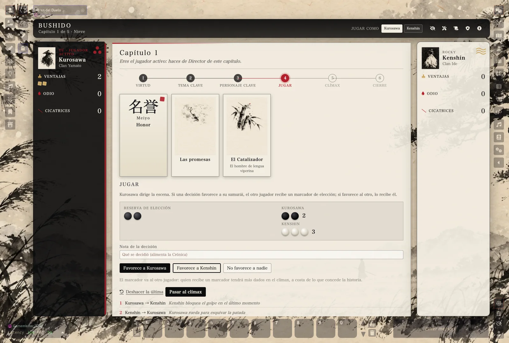
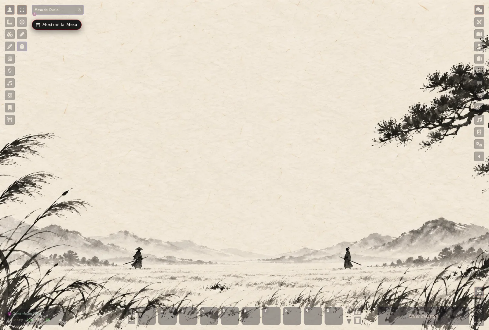
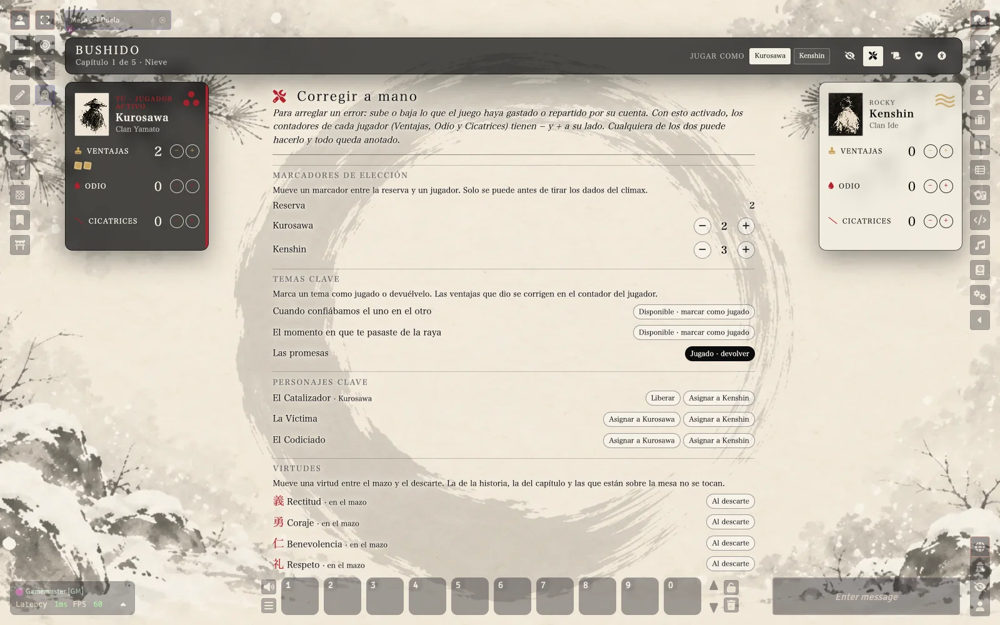
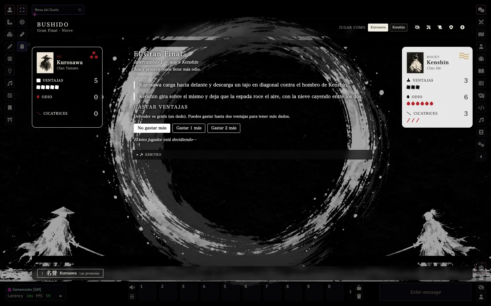
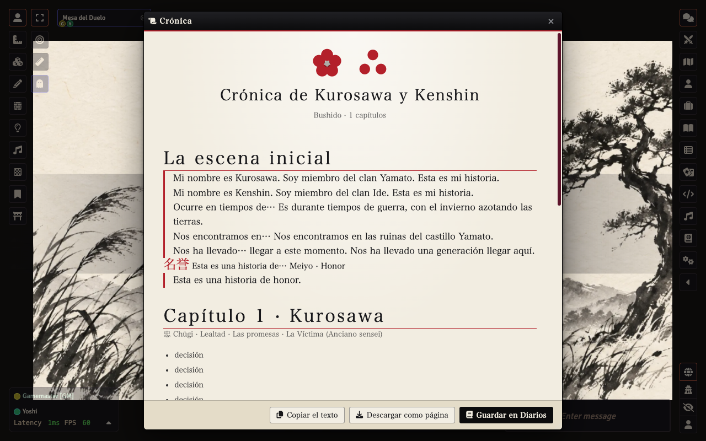

Para dos, sin Director
Cada jugador es un samurái. Se abre con el duelo final y se cuenta, en flashbacks, cómo llegasteis hasta ahí. Siete marcadores por capítulo, dados, ventajas, odio y cicatrices… y un Gran Final que se resuelve a un golpe.
La Mesa, integrada en la escena
La Mesa del Duelo ya no es una ventana: es una capa sobre la escena. El claro, el clima y el Gran Final son el fondo de toda la pantalla y los controles de Foundry siguen donde siempre. Se oculta con el ojo o con Alt+U para ver solo la escena, y se recupera con una pastilla. Si prefieres la ventana de siempre, está en Configurar ajustes → La Mesa.

Corregir a mano
Los automatismos gastan y reparten por su cuenta. Si algo sale mal en partida, la llave inglesa de la cabecera pone − y + junto a las Ventajas, el Odio y las Cicatrices, y abre un panel para mover marcadores de la reserva, devolver un tema o un personaje clave, mover virtudes y cambiar los capítulos previstos. Lo pueden hacer los dos jugadores, queda anotado y nunca baja de cero.

Qué incluye
- Mesa del Duelo con asientos simétricos y la partida entera guiada.
- Gran Final en blanco y negro, con apuesta a ciegas y golpe mortal.
- Crónica autogenerada de la historia jugada.
- Siete climas, sonido sintetizado y arte sumi-e original.
- Accesibilidad, Pausa/Velo/Tarjeta X, español e inglés.

Instalación
En Foundry, Instalar sistema y pega:
https://github.com/ManuRomera/mr-un-momento-unico/releases/latest/download/system.json

Créditos
Juego original de Tobie Abad (The Hills Press), traducción de Víctor Romero, texto CC BY 4.0. Sistema de Manu Romera. No oficial: si te gusta, compra el libro.